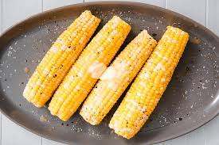

Corn On the Cob

A simple recipe of corn on the cob
Corn on the cob is a culinary term for a cooked ear of sweet corn (maize) eaten directly off the cob.
The ear is picked while the endosperm is in the "milk stage" so that the kernels are still tender.
Ears of corn are steamed, boiled, or grilled usually without their green husks, or roasted with them.
ingredients
- 1 teaspoon chili powder
- ⅛ teaspoon dried oregano
- 1 pinch onion powder
- cayenne pepper to taste
- garlic powder to taste
- salt and pepper to taste
- ½ cup butter, softened
- 6 ears corn, husked and cleaned
Steps
- Preheat grill for medium-high heat.
- In a medium bowl, mix together the chili powder, oregano, onion powder, cayenne pepper, garlic powder, salt, and pepper. Blend in the softened butter.
Apply this mixture to each ear of corn,
and place each ear onto a piece of aluminum foil big enough to wrap the corn. Wrap like a burrito, and twist the ends to close.
- Place wrapped corn on the preheated grill, and cook 20 to 30 minutes, until tender when poked with a fork. Turn corn occasionally during cooking.
Back To Home Page